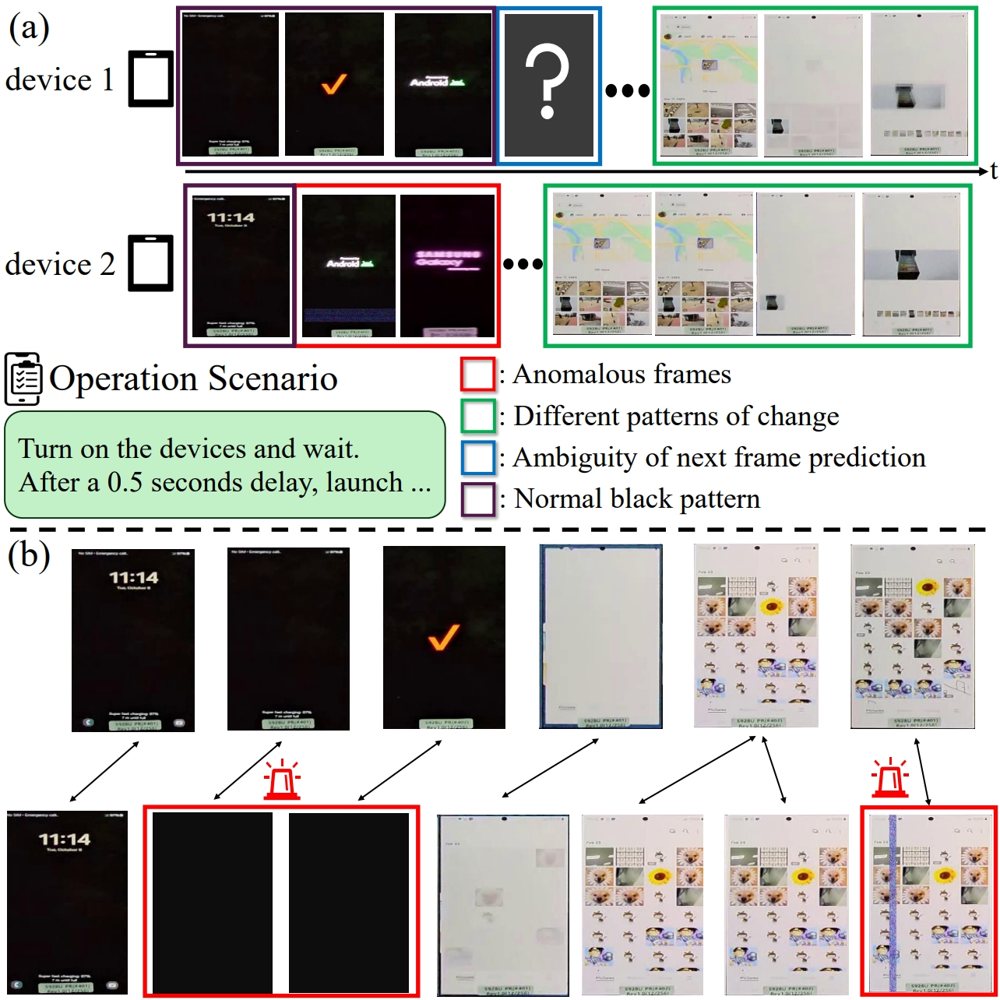

RG-VAD: Reference-Guided Video Anomaly Detection for Automated Display Inspection
Under ReviewIndustrial AI
- Video-based anomaly detection system for industrial display device inspection during long-term multi-device operation.
- Introduces two-stage video alignment and comparison for robust, noise-resistant anomaly detection.